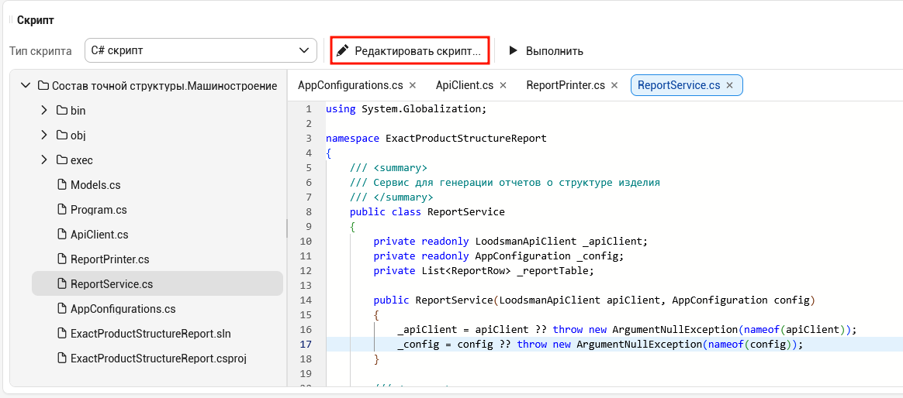
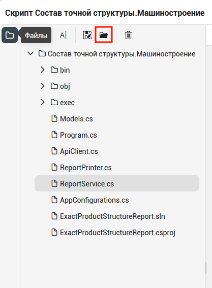
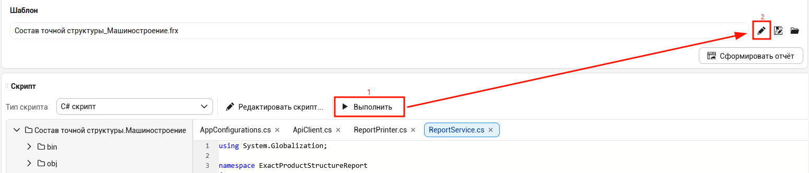
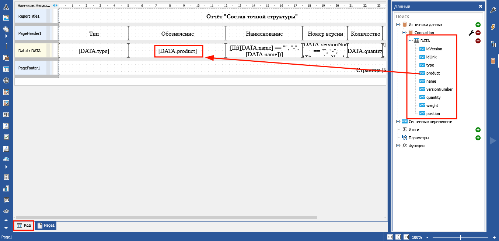
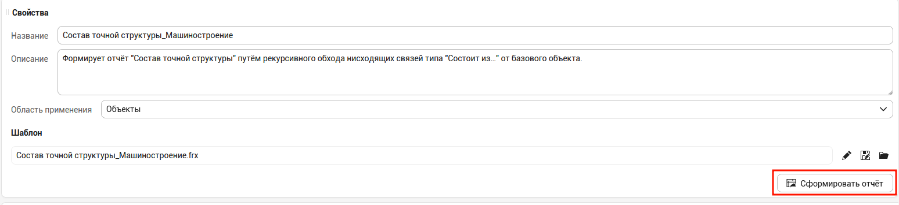
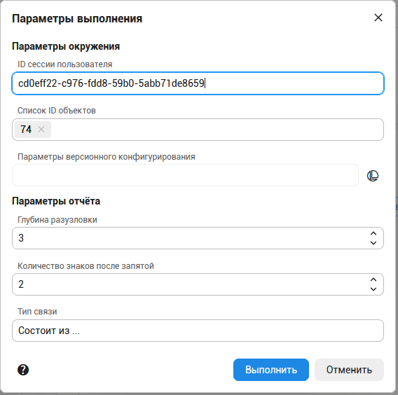
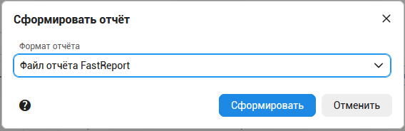

Привязка результатов выполнения скрипта к шаблону
После разработки скрипта отбора данных, необходимо привязать полученную структуру данных к шаблону оформления отчета.
ВНИМАНИЕ!
Если вы разрабатывали скрипт отбора данных во внешней среде разработки, то необходимо загрузить скрипт в службу выполнения скриптов в "ЛОЦМАН Конфигуратор".
Для этого нужно открыть скрипт на редактирование и вызвать команду загрузки скрипта с диска.
Скрипт должен быть предварительно упакован в zip-архив.
 |
 |
|---|---|
Редактирование шаблонов серверных отчетов выполняется в веб-приложении "ЛОЦМАН-Конфигуратор", но перед редактированием отчета обязательно необходимо выполнить скрипт и получить результирующий набор данных.
Данные могут носить тестовый характер, главное получить конечную структуру JSON-файла.

После выполнения скрипта "ЛОЦМАН-Конфигуратор" привяжет полученный набор данных к шаблону в качестве источника.
Проведите разметку шаблона. При необходимости, управляйте оформлением отчета с помощью программных средств FastReport.NET
Документация по FastReport.NET доступна на сайте производителя

Предварительный просмотр сформированного по шаблону отчета доступен в редакторе шаблона по комнаде главного меню "Просмотр".
В приложении ЛОЦМАН-Конфигуратор можно запустить отчет на формирование командной кнопкой "Сформировать отчет".
После указания параметров отчета и выходного формата для документа, отчет будет сформирован и загружен в браузер.

 |
 |
|---|---|